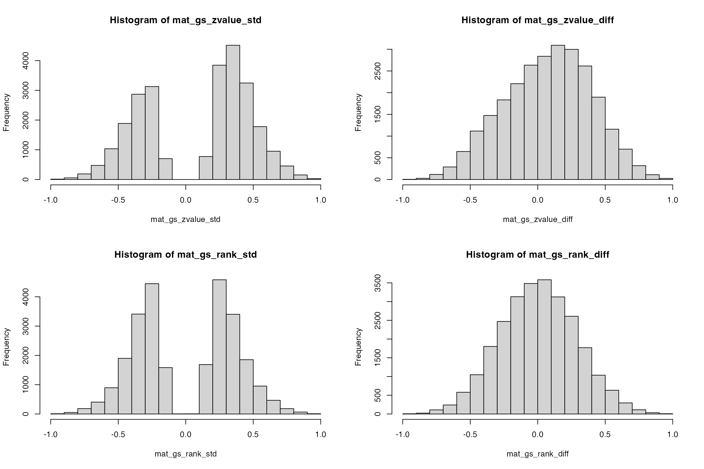
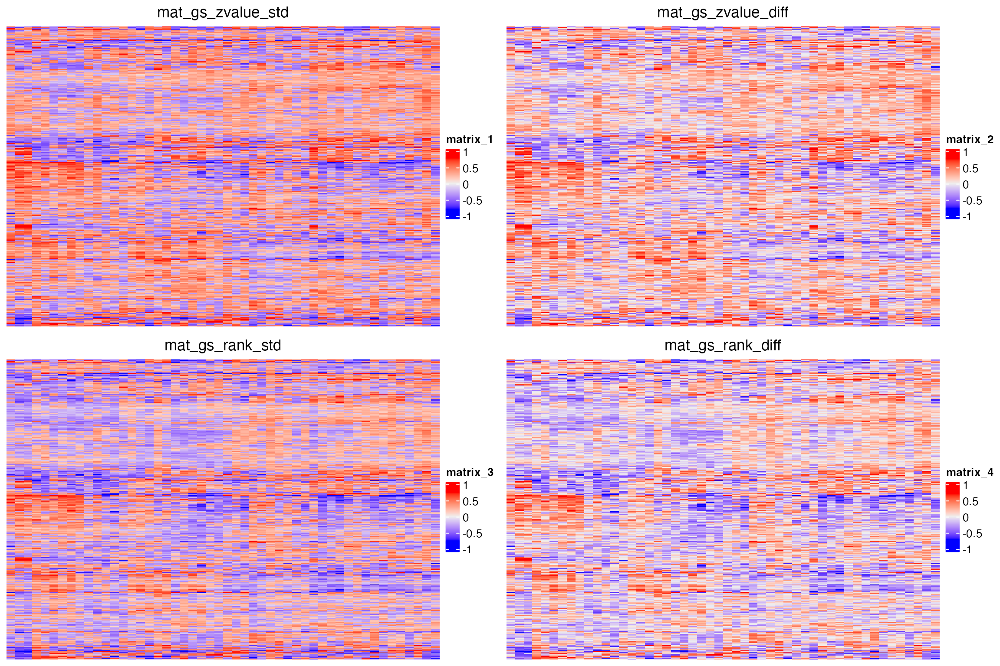
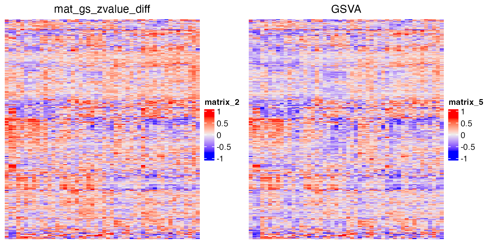
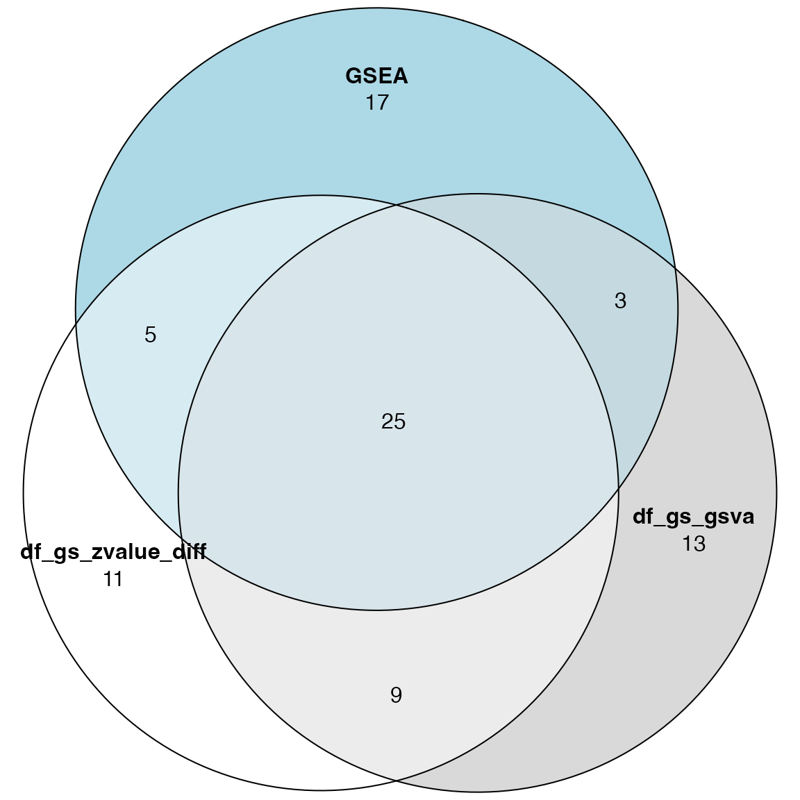
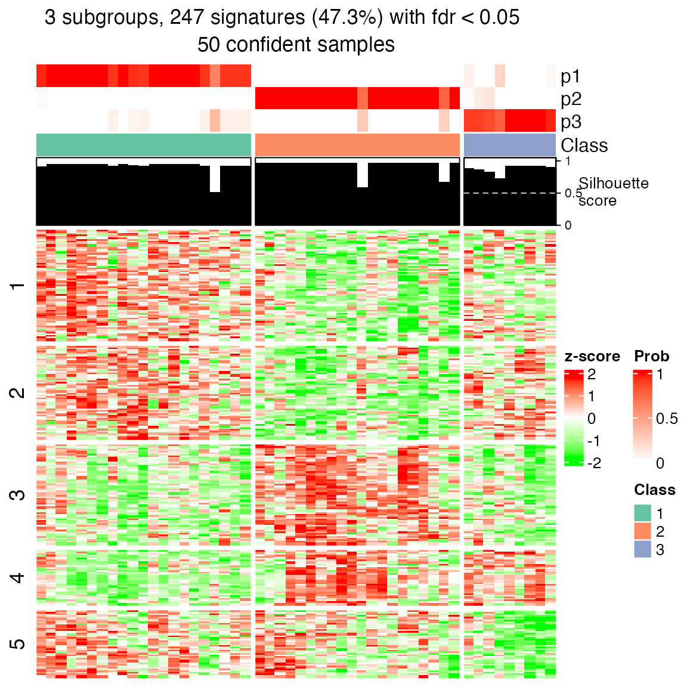
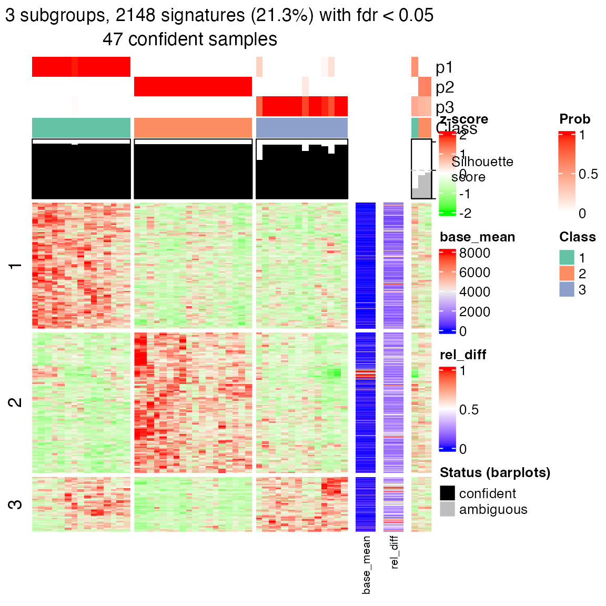
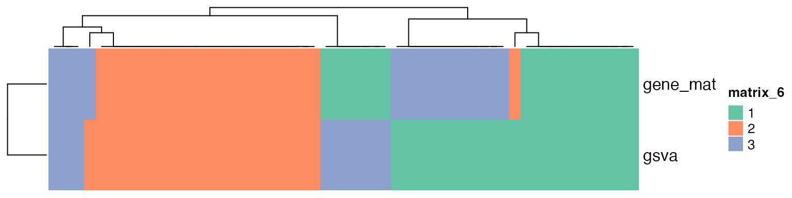

Topic 5-01: Single-sample GSEA
Zuguang Gu z.gu@dkfz.de
2025-05-29
Source:vignettes/topic5_01_single_sample.Rmd
topic5_01_single_sample.RmdWe need an expression matrix as well as experimental collections.
library(GSEAtopics)
data(p53_dataset)
expr = p53_dataset$expr
condition = p53_dataset$condition
gs = p53_dataset$gsSingle-sample GSEA
The implementation is quite straightforward. As GSEA expects a vector of gene scores, expression of all genes in a single sample can also be thought of as a type of gene scores. What we do is only to make sure such expression is relative and corresponds to “differential expression” of genes in that single sample (high/low in the cohort). This means we need to do a proper normalization or scaling across samples.
We use the simplest normalization method: z-score normalization:
The gene set level score in a sample should capture both up- and down-regulation. The default method in GSEA already can capture it by taking the maximal deviation of two CDFs for genes in and not in the gene set, and keeping the sign. GSVA also uses another metric, which is the difference between the maximal positive deviation and the maximal negative deviation. We implement both:
es_score = function(s, gene_sets, power = 1, method = c("std", "diff")) {
n = length(s)
ngs = length(gene_sets)
es = numeric(ngs)
method = match.arg(method)[1]
for(i in seq_len(ngs)) {
l_set = names(s) %in% gene_sets[[i]]
s_set = numeric(n)
s_set[l_set] = abs(s[l_set])^power
l_other = !l_set
f1 = cumsum(s_set)/sum(s_set)
f2 = cumsum(l_other)/sum(l_other)
m1 = max(f1 - f2)
m2 = min(f1 - f2)
if(method == "std") {
es[i] = max(abs(m1), abs(m2)) * ifelse(abs(m1) > abs(m2), sign(m1), sign(m2))
} else {
if(m1 >= 0 && m2 >= 0) {
es[i] = max(m1, m2)
} else if(m1 <= 0 && m2 <= 0) {
es[i] = min(m1, m2)
} else {
es[i] = m1 + m2
}
}
}
es
}Now we can go over each sample and calculate a geneset-sample matrix. Let’s do it for both “std” and “diff” methods
mat_gs_zvalue_std = matrix(nrow = length(gs), ncol = ncol(expr))
rownames(mat_gs_zvalue_std) = names(gs)
for(i in 1:ncol(expr)) {
mat_gs_zvalue_std[, i] = es_score(sort(expr_scaled[, i], decreasing = TRUE),
gs, method = "std")
}
mat_gs_zvalue_diff = matrix(nrow = length(gs), ncol = ncol(expr))
rownames(mat_gs_zvalue_diff) = names(gs)
for(i in 1:ncol(expr)) {
mat_gs_zvalue_diff[, i] = es_score(sort(expr_scaled[, i], decreasing = TRUE),
gs, method = "diff")
}In GSVA, instead of using the scaled expression values, it uses the ranks as weights. We also calculate it by two ES methods:
mat_gs_rank_std = matrix(nrow = length(gs), ncol = ncol(expr))
rownames(mat_gs_rank_std) = names(gs)
for(i in 1:ncol(expr)) {
v = rank(expr_scaled[, i]) - nrow(expr_scaled)/2
mat_gs_rank_std[, i] = es_score(sort(v, decreasing = TRUE),
gs, method = "std")
}
mat_gs_rank_diff = matrix(nrow = length(gs), ncol = ncol(expr))
rownames(mat_gs_rank_diff) = names(gs)
for(i in 1:ncol(expr)) {
v = rank(expr_scaled[, i]) - nrow(expr_scaled)/2
mat_gs_rank_diff[, i] = es_score(sort(v, decreasing = TRUE),
gs, method = "diff")
}Let’s compare the four matrices:
par(mfrow = c(2, 2))
hist(mat_gs_zvalue_std)
hist(mat_gs_zvalue_diff)
hist(mat_gs_rank_std)
hist(mat_gs_rank_diff)
library(ComplexHeatmap)
rod = hclust(dist(mat_gs_zvalue_diff))$order
cod = hclust(dist(t(mat_gs_zvalue_diff)))$order
p1 = grid.grabExpr(draw(Heatmap(mat_gs_zvalue_std, row_order = rod, column_order = cod, show_row_names = FALSE, column_title = "mat_gs_zvalue_std")))
p2 = grid.grabExpr(draw(Heatmap(mat_gs_zvalue_diff, row_order = rod, column_order = cod, show_row_names = FALSE, column_title = "mat_gs_zvalue_diff")))
p3 = grid.grabExpr(draw(Heatmap(mat_gs_rank_std, row_order = rod, column_order = cod, show_row_names = FALSE, column_title = "mat_gs_rank_std")))
p4 = grid.grabExpr(draw(Heatmap(mat_gs_rank_diff, row_order = rod, column_order = cod, show_row_names = FALSE, column_title = "mat_gs_rank_diff")))
library(cowplot)
plot_grid(p1, p2, p3, p4, nrow = 2)
In general, they give very similar patterns.
GSVA
Next we run the GSVA package.
GSVA uses CDF to normalize expression values.
p5 = grid.grabExpr(draw(Heatmap(mat_gs_gsva, row_order = rod, column_order = cod, show_row_names = FALSE, show_column_names = FALSE, column_title = "GSVA")))
plot_grid(p2, p5, nrow = 1)
We directly compare geneset-sample values between the two different methods:
par(mfrow = c(1, 2))
plot(mat_gs_zvalue_diff, mat_gs_gsva, pch = ".", xlab = "zvalue", ylab = "rank(CDF)")
plot(mat_gs_rank_diff, mat_gs_gsva, pch = ".", xlab = "rank(value)", ylab = "rank(CDF)")In general, the transformed values in the geneset-sample matrices are very linearly similar between the two normalization methods and weighting methods.
What to do with the geneset-sample matrix
The geneset-sample matrix is the end of the analysis. It only serves as an intermediate step. You can apply, e.g.
- t-test or similar test to get differentially expressed gene sets (or gene sets having differential activities),
- survival analysis on geneset-levels,
- subgroup classification.
Compare to normal GSEA
The next natural question is, compared to normal GSEA analysis, does GSVA improve the analysis? or how consistent is between the two types of analysis?
As we know the dataset is about p53 mutant, and the normal GSEA analysis has already confirmed p53-related gene sets are enriched. We validate whether single-sample based GSEA can also reveal p53 gene sets.
We use df_gs_zvalue_diff and df_gs_gsva
which are based on z-values and ranks. The significant gene sets are
analyzed by t-tests on the geneset-sample matrix.
library(genefilter)
df_gs_zvalue_diff = rowttests(mat_gs_zvalue_diff, condition,)
df_gs_zvalue_diff$fdr = p.adjust(df_gs_zvalue_diff$p.value, "BH")
df_gs_zvalue_diff = df_gs_zvalue_diff[order(df_gs_zvalue_diff$p.value), ]
df_gs_gsva = rowttests(mat_gs_gsva, condition)
df_gs_gsva$fdr = p.adjust(df_gs_gsva$p.value, "BH")
df_gs_gsva = df_gs_gsva[order(df_gs_gsva$p.value), ]The number of significant gene sets:
df_gs_zvalue_diff[df_gs_zvalue_diff$fdr < 0.05, ]## [1] statistic dm p.value fdr
## <0 rows> (or 0-length row.names)
df_gs_gsva[df_gs_gsva$fdr < 0.05, ]## statistic dm p.value fdr
## ngfPathway 5.019756 0.2659326 7.536798e-06 0.003934209
## rasPathway 4.169994 0.2658048 1.267540e-04 0.033082796The normal GSEA analysis:
s = p53_dataset$s2n
tb_gsea = fgsea_wrapper(s, gs)Top 50 gene sets from the three methods:
library(eulerr)
plot(euler(list(df_gs_zvalue_diff = rownames(df_gs_zvalue_diff)[1:50],
df_gs_gsva = rownames(df_gs_gsva)[1:50],
GSEA = tb_gsea$gene_set[1:50])
), quantities = TRUE)
The p53-related genesets:
pathways = c("P53_UP", "p53Pathway", "p53hypoxiaPathway")
df_gs_zvalue_diff[pathways, ]## statistic dm p.value fdr
## P53_UP -3.230189 -0.2279904 0.0022355421 0.17751919
## p53Pathway -4.187794 -0.3359844 0.0001196967 0.06248166
## p53hypoxiaPathway -3.679107 -0.2315379 0.0005913208 0.07716736
df_gs_gsva[pathways, ]## statistic dm p.value fdr
## P53_UP -2.831954 -0.1720811 0.006741857 0.1828161
## p53Pathway -3.204505 -0.2306409 0.002405989 0.1245656
## p53hypoxiaPathway -2.989267 -0.1983212 0.004399861 0.1556281
tb_gsea[tb_gsea$gene_set %in% pathways, ]## gene_set p_value p_adjust log2_p_err es nes
## 1 P53_UP 4.227646e-06 0.001910979 0.6105269 -0.5986774 -2.130912
## 5 p53hypoxiaPathway 5.403876e-05 0.004785001 0.5573322 -0.6816006 -2.045472
## 6 p53Pathway 5.835367e-05 0.004785001 0.5573322 -0.7438596 -2.128121
## n_gs leading_edge
## 1 40 CDKN1A, ....
## 5 20 CDKN1A, ....
## 6 16 CDKN1A, ....
rownames(tb_gsea) = tb_gsea$gene_set
cn = intersect(rownames(df_gs_zvalue_diff), rownames(df_gs_zvalue_diff))
par(mfrow = c(1, 2))
plot(df_gs_zvalue_diff[cn, "p.value"], tb_gsea[cn, "p_value"])
plot(df_gs_zvalue_diff[cn, "statistic"], tb_gsea[cn, "nes"])
abline(h = 0, lty = 2, col = "grey")
abline(v = 0, lty = 2, col = "grey")
rownames(tb_gsea) = tb_gsea$gene_set
cn = intersect(rownames(df_gs_gsva), rownames(df_gs_gsva))
par(mfrow = c(1, 2))
plot(df_gs_gsva[cn, "p.value"], tb_gsea[cn, "p_value"])
plot(df_gs_gsva[cn, "statistic"], tb_gsea[cn, "nes"])
abline(h = 0, lty = 2, col = "grey")
abline(v = 0, lty = 2, col = "grey")There are still consistency regarding the fold enrichment, but the p-values are very disperse.
Compare to gene-based analysis
Next we ask, does the geneset-sample matrix reduce the noise from the original data and help subgroup classification compared to the original gene-sample matrix?
We apply consensus clustering on the geneset-sample matrix and gene-sample matrix separately.
library(cola)
res1 = consensus_partition(mat_gs_gsva, top_value_method = "ATC", partition_method = "skmeans", verbose = FALSE)
get_signatures(res1, k = suggest_best_k(res1))## * 50/50 samples (in 3 classes) remain after filtering by silhouette (>= 0.5).
## * cache hash: 1e305c6067f5a9a4c5496ab8e5e8e6bd (seed 888).
## * calculating row difference between subgroups by Ftest.
## * split rows into 5 groups by k-means clustering.
## * 247 signatures (47.3%) under fdr < 0.05, group_diff > 0.
## * making heatmaps for signatures.
res2 = consensus_partition(expr, top_value_method = "ATC", partition_method = "skmeans", verbose = FALSE)
get_signatures(res2, k = suggest_best_k(res2))## * 47/50 samples (in 3 classes) remain after filtering by silhouette (>= 0.5).
## * cache hash: bc04608b057107f6119adf50c97e81b1 (seed 888).
## * calculating row difference between subgroups by Ftest.
## * split rows into 3 groups by k-means clustering.
## * 2148 signatures (21.3%) under fdr < 0.05, group_diff > 0.
## - randomly sample 2000 signatures.
## * making heatmaps for signatures.
We compare the two classifications.
cl1 = get_classes(res1, k = suggest_best_k(res1))$class
cl2 = get_classes(res2, k = suggest_best_k(res2))$class
Heatmap(rbind(gsva = cl1, gene_mat = cl2), col = cola:::brewer_pal_set2_col[1:3])
Note, one major reason why genesets have similar profiles is they share common genes. So the subgroups determined by a group of pathways are actually from the common genes which can only a few. This means, the subgroups from the geneset-sample matrix are eventually only from a small set of genes which are more recurrent in gene sets.
Discussion
In what scenario is GSVA useful?
What is the biological meaning of such geneset-level value? What is the “activity” of a gene set?
For “co-expression” of gene sets, actually it comes from common genes shares among them. So the analysis on co-expressed gene sets is actually on co-expression of these shared genes. In other words, there is no necessarity of using the concep on geneset-levels, while analyzing these genes is enough.
Such single-sample GSEA is more like a data transformation rather than a statistical analysis.
If these is a clear pattern from the geneset-sample matrix, it is very likely such pattern can also be revealed from gene-sample matrix.
Not restricted in KS-like transformatoin, there are a huge number of other methods to aggregate the geneset-level value.
The statistical question is changed from horizontal->vertical to vertical->horizontal.